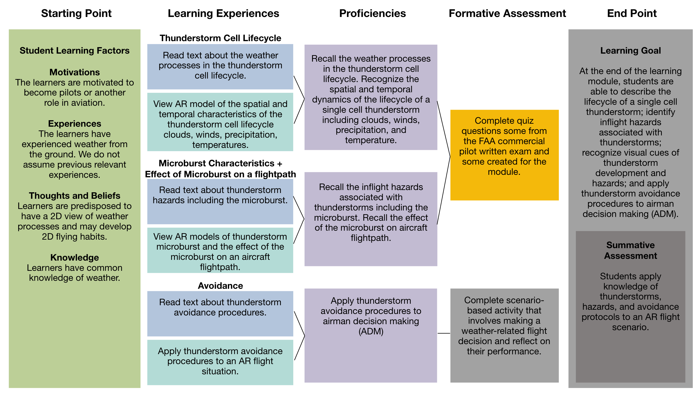
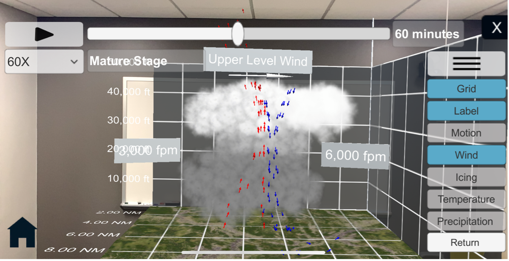
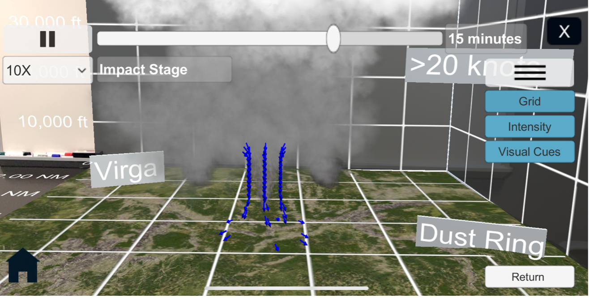

Designing AR-enhanced Learning Experiences for General Aviation Training
The work is summarized below. A full report is published in the Journal of Air Transportation.
Introduction
In general aviation (GA) weather training, students' learning inside and outside the classroom is constrained by lack of effective learning experiences with realistic representations of weather phenomena. Weather phenomena are dynamic phenomena that occur in 3D space and over time. Thus, weather phenomena may be best represented in 3D space and animated over time. Print training materials provide textual and graphical information, but the static 2D format does not allow for realistic 3D spatial distribution and temporal dynamics. Video training materials can represent the temporal dynamics of weather but are still limited in representing the 3D spatial distribution by the non-interactive 2D format. Alternatively, simulator training provides access to dynamic training experiences; however, high fidelity simulators are not always accessible to all in the GA community. Representations of weather for training can be improved by representing the 3D spatial distribution, temporal dynamics, and visual appearances in a way that is accessible to students inside and outside classroom learning environments.
Approach
This work applied augmented reality and instructional design capabilities to enhance students' learning experiences about thunderstorms. Augmented reality (AR) provides enhanced visual capabilities that provide increased immersion, animation, interactivity, and spatial registration with the real world. These capabilities were applied to the representation of thunderstorms to immerse students in an environment where they can interact with enhanced thunderstorm learning content. A learner-centered instructional design method informed the design of the learning experiences and scaffolding. The product of this work is interactive print learning materials that present the traditional training text and images and overlays the 3D AR content to enhance the learning about weather phenomena. The preliminary user study evaluated whether the materials helped students improve their motivation to learn and their knowledge of weather.
Design
This work to apply AR capabilities to enhance weather training about thunderstorms employs learner-centered instructional design (see Figure 1). The learner-centered design work is guided by overarching goal to align the instruction so that the learners move smoothly from their previous knowledge, through the learning experiences, through the formative assessments, through the summative assessment, and obtain the learning goal. The first task in the design work identifies the audiences’ previous knowledge and learning factors. The second task in the design work identifies the summative learning goal and a summative assessment. The third task in the design work is to identify a series of learning experiences that help learners become proficient in sub-tasks of the learning goal. The fourth task in the design work is to develop formative assessments that help the learner assess their proficiency on the sub-tasks and provide feedback to the learners.

The first learning activity was about the thundersorm cell lifecycle.

The second learning activity was about the microburst characteristics

The third learning activity was about about the effects of a microburst on an aircraft flightpath.

The fourth learning activity was about thunderstorm avoidance.

Evaluation
A user evaluation was conducted to assess students’ learning outcomes and experiences. Students’ learning outcomes were evaluated through pre-and post-test measures of factual and visual knowledge. Students’ learning experiences were evaluated through measures of task load, appropriateness, motivation, and written feedback positives and improvements.
Hypothesis 1 (H1): The completion of AR learning experiences improves students’ factual knowledge about thunderstorms in the post-test compared to the pre-test.
Hypothesis 2 (H2): The completion of AR learning experiences improves students’ visual knowledge about thunderstorms in the post-test compared to the pre-test.
Participants
The participants were 18 (17 male, 1 female) student pilots or pilots with fewer than 250 total flight hours. Of the 18, five were student pilots, five had FAA private pilot certificates, four had FAA private pilot certificates with instrument ratings, two had FAA commercial pilot certificates with instrument ratings, and two had no pilot certification. The participants had an average age of M = 25.0 (SD = 10.3) years. They had an average total flight hours of M = 96.6 (SD = 83.0) hours, an average instrument flight hours of M = 14.8 (SD = 21.1), and average flight hours in the last 60 days of 14.0 (SD = 17.0). Of the 18, nine did not report any previous weather training, six had taken an aviation meteorology course, four had taken private pilot ground school, and one had taken some military weather-related training. They had an average M = 29.8 (SD = 54.9) hours of experience using AR/VR. Those with higher hours using AR/VR primarily report using VR for flight simulation. In the study, they used the AR app with iPhones (16 participants) and Android phones (2).
Procedure
Students were asked to complete the AR learning experiences to learn about thunderstorms. The study tasks mapped onto Figure 1. First, participants viewed the thunderstorm cell lifecycle model on a mobile device based on the marker position captured by the device camera. They could then interact with the model by enabling and disabling visual layers depicting various hazards. After exploring the model, they answered a set of questions. Second, participants viewed the AR microburst characteristics model and answered questions. Third, participants viewed the AR content about the effect of the microburst on an aircraft's flight path and answered questions about it. Fourth, participants viewed an AR flight situation and applied avoidance procedures. Table 1 summarizes the tasks and the prompts given to students to complete the task.
Data collection and analysis
| Dependent Variable | Metric | Data type | Method | Frequency |
|---|---|---|---|---|
| Factual knowledge | Quiz Score | Percent | Quiz | Pre/Post experiment |
| Visual knowledge | Quiz Score | Percent | Quiz | Pre/Post experiment |
| Task time | Time | Seconds | Qualtrics | Post-task |
| Task correctness | Score | Percent | Qualtrics | Post-task |
| Task load | NASA TLX | Scale 0-20 | Questionaire | Post-task |
| Motivation | RIMMS | Scale 1-5 | Questionaire | Post-experiment |
| System Usability | SUS | Scale 1-5 | Questionaire | Post-experiment |
| Positives | Statements | Text | Written statement | Post-task and experiment |
| Improvements | Statements | Text | Written statement | Post-task and experiment |
Two-tailed paired-samples t-tests were conducted to compare the knowledge test scores in the pre-test and post-test conditions. The alpha level of .05 was used for all statistical tests. The effect sizes were calculated using Cohens d and categorized according to Cohen’s thresholds where 0.2 <= d < 0.5 is a small effect, 0.5 <= d < 0.8 is a medium effect, and d >= 0.8 is a large effect. Quantitative data about task load, system usability, appropriateness, and motivation were described. Written statements about positives and improvements were aggregated, and themes were developed.
Results and discussion
The study evaluated the student learning outcomes and experiences that resulted from completing the four AR learning experiences. Participants rated the experiences as appropriate to their education and were able to complete the tasks with high levels of correctness. The results show positive learning outcomes through significant improvements in factual and visual knowledge after completing the AR learning experiences. The results also provide evidence of positive learning experiences through high average scores for motivation, appropriateness, usability, and task completion correctness, as well as reasonable scores for task load and task completion time.
Hypothesis 1 was fully supported. Students significantly increased their scores on the factual knowledge post-tests compared to the pre-tests after completing the AR learning experiences. For example, a student commented that it was “easy to grasp the concepts and see how they would happen in the AR environment.” Similarly, hypothesis 2 was fully supported. Students significantly increased their visual knowledge post-test scores compared to the pre-tests after completing the AR learning experiences. There was a larger effect size for visual knowledge than factual knowledge, which aligns with previous research that found that AR-enhancements improve students’ understanding of spatial data. One student said that the app “took away the need to visualize a storm and how it forms and made it very easy to see in a 3D setting what a storm will look like through its various stages. I think this helps a lot for pilots who are very new as they may not be familiar with how one would look in the air.” Participants in this study had high pre-test knowledge scores (73% and 55%) because the study included student pilots and pilots with fewer than 250 flight hours. Future studies may limit the participants to student pilots and pilots with fewer flight hours.
AR learning experiences may be a good tool for motivating students to learn about weather in classroom settings. After completing the learning tasks in this study, students reported high motivation levels with higher scores for confidence. Previous work has identified that some students may not be motivated to learn about the weather because it is seen as a boring subject. AR learning experiences may engage students and support their motivation to learn about the weather when students confidently complete learning tasks they see as relevant to becoming a pilot. Students may have felt engaged because they completed the tasks with high correctness and low task load. One student said, “it’s not challenging to stay engaged to the information.” In addition to engagement, students rated the learning experiences as highly appropriate. One said that “it is information that I will most likely use in the future.” Future work can investigate how the confident completion of appropriate tasks may impact students’ motivation to continue learning about weather.
Participants who completed this training may have felt overconfident in their knowledge of thunderstorms because they completed the learning tasks correctly and completed the knowledge quizzes with high scores. The training was only one representative case of a single-cell thunderstorm and therefore very limited in scope. There are several areas where the training lacks comprehensive representations of what students need to know when they fly. The training could have been more comprehensive in terms of weather phenomena since it neither covered the variability in a single-cell thunderstorms nor multi-cell storms. The training could also be more comprehensive in terms of cognitive skills since it did not cover skills such as situation awareness and weather-related decision-making with a realistic amount of detail. Future work will expand the training to help students develop an appreciation for the variability of thunderstorms, the types of thunderstorms, and the cognitive complexity of responding to thunderstorms during flight.